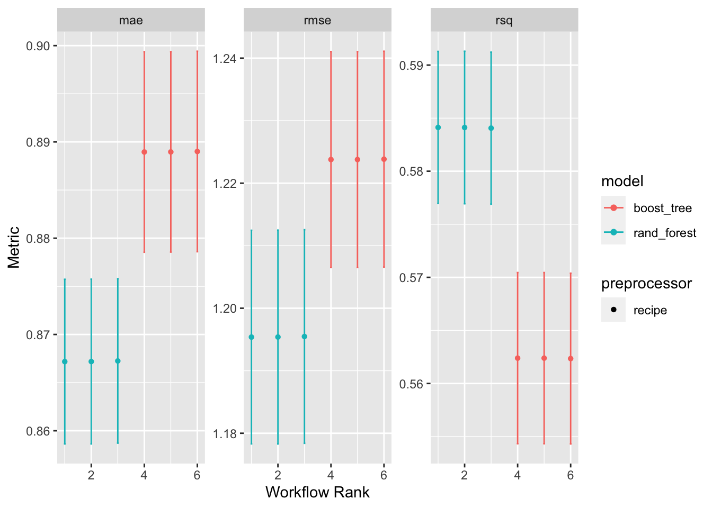

When building a model, its often a good idea to compare and contrast different options for preprocessing and model creation. Workflowsets contains tools to build sets of workflows for easy comparison.
In order to build a workflow set, begin by creating a list of preprocessors and a list of models. The preprocessors can be either formulas or recipes.
leave_var_out_formulas(). This method takes in a formula and returns a list of formulas with each predictor left out in turn.This example uses the cfin dataset introduced in the Tune Tutorial.
# creating three different recipes -- one with no transformations, one where bathymetry is log scaled, and one where bathymetry is log scaled and all variables are normalized.
basic_rec <- recipe(abundance ~ ., data = cfin_train) |>
update_role(lat, lon, year, new_role = "ID") |>
step_corr(threshold = .9) |>
# boosted regression trees require dummy variables
step_dummy(all_nominal_predictors())
log_bathy <- basic_rec |>
step_log(Bathy_depth, base = 10)
normalize <- log_bathy |>
step_normalize(all_numeric_predictors())
# the names of each item in the list will be later used to id workflows
preproc_list <- list(basic = basic_rec,
log = log_bathy,
norm = normalize)
# creating two different models -- random forest and boosted regression tree
rf <- rand_forest(mode = "regression",
engine = "ranger",
trees = 100)
# note required package install: xgboost
brt <- boost_tree(mode = "regression",
engine = "xgboost",
trees = 15)
model_list <- list(rf = rf, brt = brt)To build the actual set of workflows, use the workflow_set() method. Each workflow will combine a preprocessor and recipe from the input lists.
as_workflow_set() method.cfin_wkfs <- workflow_set(preproc_list, model_list,
cross = TRUE) # create all combinations of models?
cfin_wkfs## # A workflow set/tibble: 6 × 4
## wflow_id info option result
## <chr> <list> <list> <list>
## 1 basic_rf <tibble [1 × 4]> <opts[0]> <list [0]>
## 2 basic_brt <tibble [1 × 4]> <opts[0]> <list [0]>
## 3 log_rf <tibble [1 × 4]> <opts[0]> <list [0]>
## 4 log_brt <tibble [1 × 4]> <opts[0]> <list [0]>
## 5 norm_rf <tibble [1 × 4]> <opts[0]> <list [0]>
## 6 norm_brt <tibble [1 × 4]> <opts[0]> <list [0]>After creating the workflow set, apply operations across the set using the workflow_map() method. Results are collected into the results column of the workflow set.
workflow_map() can apply any tune_*() method as well as tune::fit_resamples().# applying fit_resamples across the workflow set to assess performance
# using cfin_control and cfin_folds defined in Tune Tutorial
fitted_wkfs <- cfin_wkfs |>
workflow_map(fn = "fit_resamples", # method to apply in quotes
verbose = FALSE,
seed = 400,
resamples = cfin_folds, # arguments for fn
metrics = metric_set(rmse, rsq, mae),
control = cfin_control)
fitted_wkfs## # A workflow set/tibble: 6 × 4
## wflow_id info option result
## <chr> <list> <list> <list>
## 1 basic_rf <tibble [1 × 4]> <opts[3]> <rsmp[+]>
## 2 basic_brt <tibble [1 × 4]> <opts[3]> <rsmp[+]>
## 3 log_rf <tibble [1 × 4]> <opts[3]> <rsmp[+]>
## 4 log_brt <tibble [1 × 4]> <opts[3]> <rsmp[+]>
## 5 norm_rf <tibble [1 × 4]> <opts[3]> <rsmp[+]>
## 6 norm_brt <tibble [1 × 4]> <opts[3]> <rsmp[+]>In order to cleanly assemble results into a tibble, use collect_metrics(). To determine the best workflow, use rank_results() to sort workflow results by a desired metric.
# collecting metrics
fitted_wkfs |>
collect_metrics() |>
head()## # A tibble: 6 × 9
## wflow_id .config preproc model .metric .estimator mean n std_err
## <chr> <chr> <chr> <chr> <chr> <chr> <dbl> <int> <dbl>
## 1 basic_rf Preprocessor1_… recipe rand… mae standard 0.867 5 0.00520
## 2 basic_rf Preprocessor1_… recipe rand… rmse standard 1.20 5 0.0104
## 3 basic_rf Preprocessor1_… recipe rand… rsq standard 0.584 5 0.00435
## 4 basic_brt Preprocessor1_… recipe boos… mae standard 0.889 5 0.00633
## 5 basic_brt Preprocessor1_… recipe boos… rmse standard 1.22 5 0.0105
## 6 basic_brt Preprocessor1_… recipe boos… rsq standard 0.562 5 0.00490# determining the workflow with the best rmse
fitted_wkfs |>
rank_results(rank_metric = "rmse", select_best = FALSE)## # A tibble: 18 × 9
## wflow_id .config .metric mean std_err n preprocessor model rank
## <chr> <chr> <chr> <dbl> <dbl> <int> <chr> <chr> <int>
## 1 basic_rf Preprocessor1… mae 0.867 0.00520 5 recipe rand… 1
## 2 basic_rf Preprocessor1… rmse 1.20 0.0104 5 recipe rand… 1
## 3 basic_rf Preprocessor1… rsq 0.584 0.00435 5 recipe rand… 1
## 4 log_rf Preprocessor1… mae 0.867 0.00520 5 recipe rand… 2
## 5 log_rf Preprocessor1… rmse 1.20 0.0104 5 recipe rand… 2
## 6 log_rf Preprocessor1… rsq 0.584 0.00437 5 recipe rand… 2
## 7 norm_rf Preprocessor1… mae 0.867 0.00519 5 recipe rand… 3
## 8 norm_rf Preprocessor1… rmse 1.20 0.0104 5 recipe rand… 3
## 9 norm_rf Preprocessor1… rsq 0.584 0.00435 5 recipe rand… 3
## 10 basic_brt Preprocessor1… mae 0.889 0.00633 5 recipe boos… 4
## 11 basic_brt Preprocessor1… rmse 1.22 0.0105 5 recipe boos… 4
## 12 basic_brt Preprocessor1… rsq 0.562 0.00490 5 recipe boos… 4
## 13 log_brt Preprocessor1… mae 0.889 0.00633 5 recipe boos… 5
## 14 log_brt Preprocessor1… rmse 1.22 0.0105 5 recipe boos… 5
## 15 log_brt Preprocessor1… rsq 0.562 0.00490 5 recipe boos… 5
## 16 norm_brt Preprocessor1… mae 0.889 0.00633 5 recipe boos… 6
## 17 norm_brt Preprocessor1… rmse 1.22 0.0105 5 recipe boos… 6
## 18 norm_brt Preprocessor1… rsq 0.562 0.00489 5 recipe boos… 6Workflowsets also contains an autoplot() method to easily visualize results. autoplot() is capable of plotting both rank_results() as well as the results for individual workflows.
ggplot methods on the output of rank_results().fitted_wkfs |>
autoplot(rank_metric = "rmse", # metric to determine workflow rank,
id = "workflow_set") # workflow to plot -- use workflow_set to plot all
Note: Workflowsets has additional capabilities for editing, extracting, and examining individual workflows that are not covered here. See the “Further Resources” section for more information.
tune_grid() to a tunable workflow set.